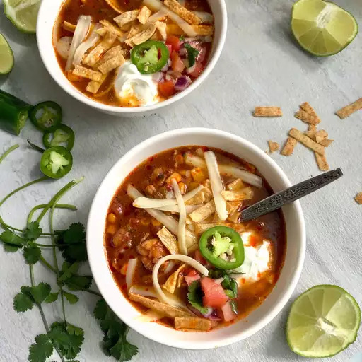

Chicken Enchilada Slow Cooker Soup

Description
Chicken Enchilada Slow Cooker Soup is a delightful blend of classic Mexican flavors in a comforting soup format.
This recipe involves slow-cooking chicken breasts in a rich and spicy enchilada sauce, along with diced tomatoes, black beans, corn, and a mix of spices like cumin, chili powder, and garlic.
The slow cooking process allows the ingredients to meld together, creating a flavorful and hearty broth. The chicken becomes tender and easily shreddable, making it perfect for a warming, satisfying meal.
Ingredients
- 1 pound skinless, boneless chicken breast halves
- 1 (15.25 ounce) can whole kernel corn, drained
- 1 (14.5 ounce) can diced tomatoes, undrained
- 1 (14.5 ounce) can chicken broth
- 1 (10 ounce) can enchilada sauce
- 1 white onion, chopped
- 1 (4 ounce) can diced green chiles
- ¼ cup chopped fresh cilantro
- 3 cloves garlic, minced
- 2 bay leaves
- 1 teaspoon ground cumin
- 1 teaspoon chili powder
- 1 teaspoon salt
- ¼ teaspoon ground black pepper, or to taste
Steps
- Rinse chicken breasts and pat dry
- Place chicken into the bottom of a slow cooker.
- Add corn, tomatoes, chicken broth, enchilada sauce, onion, green chiles, cilantro, garlic, bay leaves, cumin, chili powder, salt, and pepper.
- Cover and cook on Low for 6 hours.
- Transfer chicken to a large plate, then shred meat with two forks
- shredded chicken to the slow cooker, stir to combine, and continue cooking for 30 to 60 more minutes
- Discard bay leaves before serving.